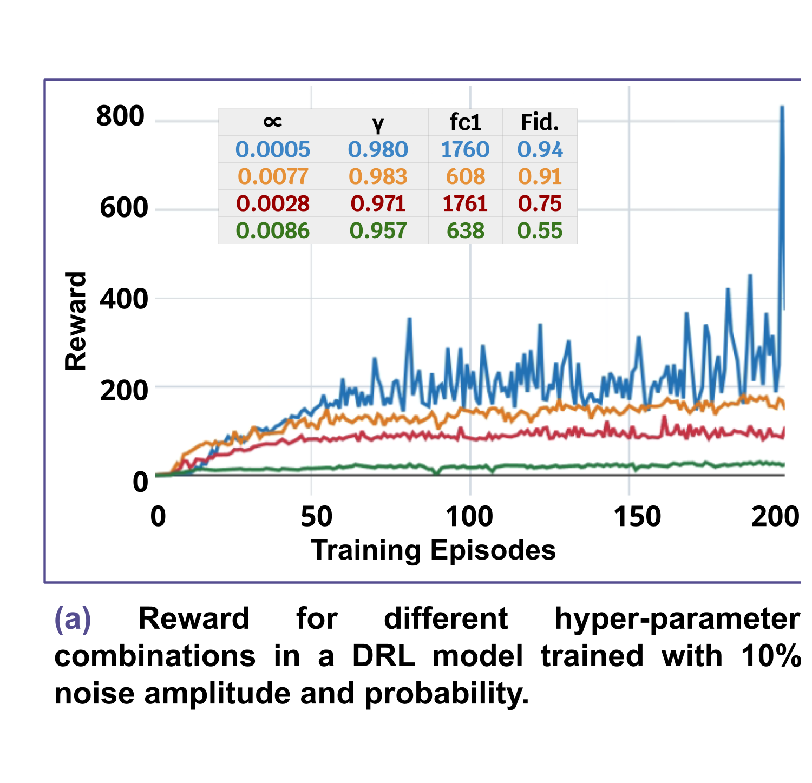
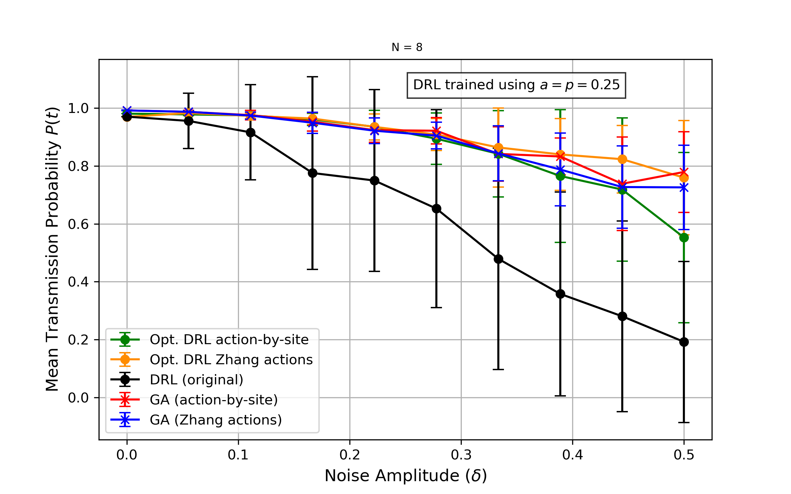
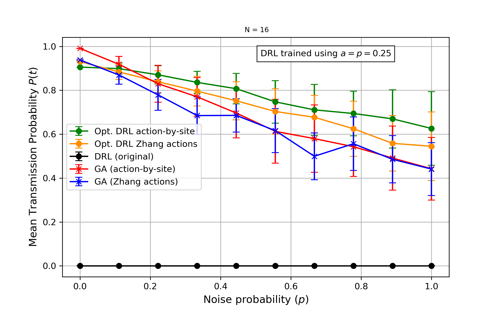
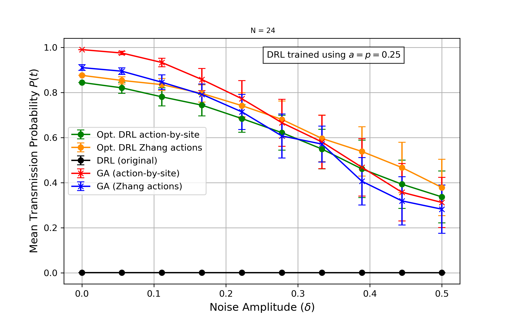
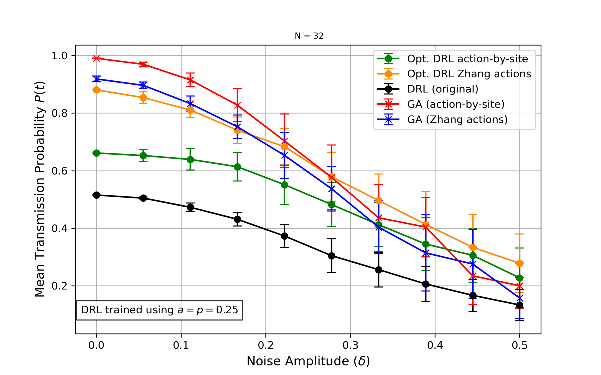

¿Qué tan bien sobreviven las estrategias de control cuántico cuando el control deja de ser perfecto? Este trabajo extiende la comparación entre algoritmos genéticos (GA) y Deep Reinforcement Learning (DRL) para la transmisión de estados cuánticos en cadenas de qubits al caso con ruido dinámico. El resultado es matizado: para ruido débil el GA sigue siendo más robusto, pero un DQN entrenado directamente bajo ruido (domain randomization) con recompensa densa eventualmente lo supera a medida que el ruido se intensifica. Este trabajo se desarrolló en colaboración.
Optimización de Hiperparámetros con Optuna
Dado que el desempeño del DQN depende críticamente de la elección de sus hiperparámetros, se realizó una búsqueda sistemática con Optuna sobre el factor de descuento de la recompensa γ ∈ [0.95, 1], la tasa de aprendizaje α ∈ [10⁻⁵, 10⁻²] y el número de neuronas de la primera capa oculta ∈ [512, 4096] (la segunda capa usa un tercio de ese valor). Para cada longitud de cadena y conjunto de acciones se corrieron 32 trials de 20000 episodios de entrenamiento, seguidos de 100 episodios de validación, bajo una probabilidad y amplitud de ruido dinámico del 25%. En contraste, el comportamiento del GA está gobernado por un conjunto mucho más chico de parámetros intuitivos (tamaño de población, tasa de mutación, criterio de saturación), lo que simplifica notablemente su ajuste — de ahí que, a diferencia del DQN, el GA no necesite una optimización de hiperparámetros dedicada.
| Longitud de cadena | Conjunto de acciones | γ | α | Neuronas (1ª capa) |
|---|---|---|---|---|
| 8 | por sitio | 0.971 | 0.008 | 2417 |
| 8 | Zhang | 0.964 | 0.001 | 3910 |
| 16 | por sitio | 0.972 | 0.0008 | 4062 |
| 16 | Zhang | 0.966 | 0.0006 | 1494 |
| 24 | por sitio | 0.998 | 0.003 | 3219 |
| 24 | Zhang | 0.999 | 0.0001 | 1400 |
| 32 | por sitio | 0.990 | 0.001 | 1502 |
| 32 | Zhang | 0.997 | 0.0003 | 3511 |
| Original (todas) | Zhang | 0.95 | 0.01 | 120 |
Tabla II. Hiperparámetros óptimos encontrados con Optuna para cada longitud de cadena y conjunto de acciones (25% de probabilidad y amplitud de ruido durante el entrenamiento), comparados con los usados por Zhang et al. (última fila, resaltada).

Recompensa de entrenamiento del DQN por combinación de hiperparámetros (10% de ruido).
Robustez frente al Ruido Dinámico
Los protocolos de control se evaluaron bajo dos modelos de ruido dinámico tipo dephasing (un tipo de ruido que aleatoriza la fase cuántica del estado sin intercambiar energía con el entorno). En el esquema de ruido de toda la cadena (WCN), en cada paso temporal, con probabilidad p, todos los coeficientes del vector de estado se multiplican simultáneamente por fases aleatorias eiδξk, con ξk uniformemente distribuido en [-1, 1]. En el esquema alternativo de ruido sitio a sitio (SSN), cada sitio se perturba de forma independiente, calibrando la probabilidad por sitio de modo que el número esperado de eventos de ruido por paso temporal coincida con el del esquema WCN. Los resultados de ambos esquemas se comparan más abajo, en Ruido Global vs. Ruido Sitio a Sitio.
Para validar la robustez, se entrenó al DQN directamente bajo ese ruido (domain randomization, p=δ=0.25), con hiperparámetros optimizados vía Optuna para esa misma condición (Tabla II). Cada modelo entrenado se validó sobre 100 corridas independientes, comparándolo contra el DQN original (sin entrenamiento ni ajuste para ruido) y contra las secuencias fijas obtenidas por el GA sin ruido, expuestas al mismo modelo de ruido durante la validación.
N=8: Amplitud fija

Probabilidad de transmisión vs probabilidad de ruido (amplitud fija δ=0.25).
N=8: Probabilidad fija

Probabilidad de transmisión vs amplitud de ruido (probabilidad fija p=0.25).
N=16: Amplitud fija

Probabilidad de transmisión vs probabilidad de ruido (amplitud fija δ=0.25).
N=16: Probabilidad fija

Probabilidad de transmisión vs amplitud de ruido (probabilidad fija p=0.25).
N=24: Amplitud fija

Probabilidad de transmisión vs probabilidad de ruido (amplitud fija δ=0.25).
N=24: Probabilidad fija

Probabilidad de transmisión vs amplitud de ruido (probabilidad fija p=0.25).
N=32: Amplitud fija

Probabilidad de transmisión vs probabilidad de ruido (amplitud fija δ=0.25).
N=32: Probabilidad fija

Probabilidad de transmisión vs amplitud de ruido (probabilidad fija p=0.25).
Resultados principales:
- El DQN sin entrenamiento ni optimización para ruido (curva negra) colapsa rápidamente: solo es competitivo en el límite de ruido nulo y para cadenas muy cortas
- Para cadenas más largas, las secuencias generadas por el GA exhiben mayor resiliencia frente a ruido dinámico de amplitud y probabilidad bajas
- Cuando el DQN se entrena explícitamente con ruido y sus hiperparámetros se optimizan bajo esa misma condición, su probabilidad de transmisión promedio eventualmente supera a la del GA a medida que aumenta la intensidad del ruido —el efecto es más marcado en cadenas cortas y en el límite de ruido fuerte
- No existe un único conjunto de acciones óptimo para el DQN frente a ruido: mientras que para el GA el esquema por sitio es siempre superior, para el DQN la elección óptima depende de la longitud de la cadena y de la probabilidad/amplitud del ruido
Recompensa Densa vs. Recompensa Dispersa
La recompensa original de Zhang et al., usada como línea base, es dispersa: depende solo de la probabilidad de transmisión y da una señal muy débil mientras esta permanece cerca de cero, que es la mayor parte de la evolución. Para mejorar la señal de aprendizaje se introdujo una recompensa densa, R = (1+F)⟨χ⟩, que combina la fidelidad de transmisión F con la posición media de la excitación a lo largo de la cadena, ⟨χ⟩ = Σⱼ j|ψⱼ|² —una señal continua que crece a medida que la excitación avanza, incluso mucho antes de llegar al final.
- La recompensa densa produce una mejora sistemática sobre la dispersa: el agente recibe una señal más informativa y frecuente a lo largo de toda la evolución, no solo cerca del final
- Aun así, la probabilidad de transmisión lograda con recompensa densa sigue por debajo de la del GA y sigue decayendo con la longitud de cadena, aunque de forma más suave
- El hallazgo más importante de esta comparación es que el diseño de la recompensa importa menos que la estructura del entorno de entrenamiento: las mejoras más grandes no vienen de cambiar la recompensa, sino de entrenar en presencia de ruido y desorden (ver secciones siguientes)
Ruido Global vs. Ruido Sitio a Sitio (WCN vs. SSN)
Para chequear que las conclusiones no dependieran de la estructura espacial particular del ruido, se repitió el estudio de robustez completo bajo el esquema SSN (descripto arriba), calibrado para inyectar en promedio la misma cantidad de perturbación que el esquema WCN. Los modelos de DQN se entrenaron únicamente bajo WCN (p=δ=0.25) y se evaluaron después bajo ambos esquemas.
- WCN y SSN no muestran diferencias significativas en ningún régimen de parámetros explorado, consistente con que ambos esquemas afectan, en promedio, la misma cantidad de sitios a lo largo de todo el episodio
- Los modelos de DQN entrenados exclusivamente bajo WCN generalizan bien a SSN sin haberlo visto nunca durante el entrenamiento, lo que sugiere que las políticas aprendidas no están sobreajustadas a la estructura espacial particular del ruido de entrenamiento
- El orden de desempeño relativo entre métodos se mantiene igual bajo ambos esquemas: el GA por sitio sigue siendo el mejor en el régimen de ruido bajo, y las estrategias de DQN siguen ganando robustez relativa a medida que aumenta la intensidad del ruido
Entrenamiento con Desorden Estático
Además del ruido dinámico, se estudió el efecto del desorden estático en los acoples de la cadena, Ji → Ji(1+δi), con δi muestreado uniformemente en [-ε, ε] y fijo durante toda la evolución (a diferencia del ruido dinámico, que cambia en cada paso temporal). Se entrenaron dos variantes de DQN con recompensa densa: una solo con ruido dinámico (p=δ=0.25), y otra combinando ruido dinámico y desorden estático durante el entrenamiento (p=δ=0.1, desorden=0.1).
- Para desorden y ruido bajos, el GA sigue ganando (evaluado sobre secuencias optimizadas sin desorden)
- Entre las variantes de DQN, el modelo entrenado combinando ruido dinámico y desorden estático supera consistentemente al entrenado solo con ruido dinámico, tanto frente a desorden puro como frente a ruido sitio a sitio
- Combinar distintos tipos de evolución dinámica durante el entrenamiento —ruido y desorden— resulta una estrategia sensata para mejorar la exploración del DQN: lo obliga a considerar un rango más amplio de estados posibles
Desorden Estático en las Secuencias del GA
Para el GA se distinguen dos situaciones: secuencias "probadas con desorden" (optimizadas en condiciones ideales y luego evaluadas sobre Hamiltonianos desordenados) y secuencias "optimizadas con desorden" (donde cada corrida del GA usa Hamiltonianos con una realización de desorden distinta, muestreada en cada generación).
- Optimizar directamente contra el desorden recupera la mayor parte de la fidelidad perdida, siempre que las inhomogeneidades sean conocidas de antemano y se puedan incorporar al proceso de optimización
- No hay una ventaja sistemática de un conjunto de acciones sobre el otro frente al desorden: la comparación depende de la intensidad del desorden y del tamaño del sistema. De hecho, a intensidades de desorden más altas el conjunto de acciones de Zhang et al. —peor en el caso ideal— se vuelve más robusto que el esquema por sitio, que se degrada con fuerza
- Los niveles de desorden explorados (hasta 0.5) son mucho mayores a los esperables en dispositivos cuánticos reales; se usaron deliberadamente para poner a prueba el comportamiento del modelo en regímenes extremos
Conclusiones
- Frente al ruido, el panorama es más matizado que en el caso ideal: el desempeño de las secuencias del DQN termina siendo mejor que el del GA para ruido suficientemente fuerte, y entrenar el DQN en un entorno débilmente ruidoso no degrada significativamente su desempeño respecto del caso sin ruido. La conclusión es tan simple como exigente: controlar sistemas cuánticos ruidosos requiere un método que, en el límite de ruido cero, iguale el desempeño del GA, y que pueda entrenarse bajo condiciones ruidosas sin degradación sustancial.
- Mientras que para el GA el esquema de acciones por sitio es claramente mejor —en el caso ideal y con ruido por igual—, lo mismo no es necesariamente cierto para el DQN frente a evolución dinámica ruidosa: no hay un único conjunto de acciones universalmente óptimo, sino que la elección depende de la longitud de la cadena y de la probabilidad y amplitud del ruido.
Estos resultados son el complemento natural de los obtenidos en el régimen ideal (sin ruido): ahí el GA gana sin matices; acá, frente a ruido suficientemente fuerte, un DQN bien entrenado y optimizado le termina ganando la partida.
Tecnologías
Estado del Trabajo
Este estudio de robustez se desarrolló en colaboración, como parte del mismo programa de investigación doctoral en el Instituto de Física Enrique Gaviola (CONICET-UNC) y la FaMAF-UNC que dio lugar al trabajo publicado en Physica Scripta, en coautoría con A. Fiuri, M. Domínguez y O. Osenda.
Referencias
[1] X.-M. Zhang et al., Physical Review A 97, 052333 (2018). DOI: 10.1103/PhysRevA.97.052333
[2] A. Fiuri, M. Domínguez, S. Perón Santana y O. Osenda, "Solving the Qubit Transmission Problem with Biologically Inspired Neural Networks and Reinforcement Learning", en Information Management and Big Data (SIMBig 2025), Communications in Computer and Information Science, vol. 2895, pp. 60–78, Springer, Cham (2026). DOI: 10.1007/978-3-032-20322-9_5
[3] S. Perón Santana, A. Fiuri, M. Domínguez y O. Osenda, "The pros and cons of using deep reinforcement learning or genetic algorithms to design control schemes for quantum state transfer on qubit chains", Physica Scripta 101, 265101 (2026). DOI: 10.1088/1402-4896/ae7cc1 — el trabajo del que este estudio parte, cubriendo el régimen ideal sin ruido.